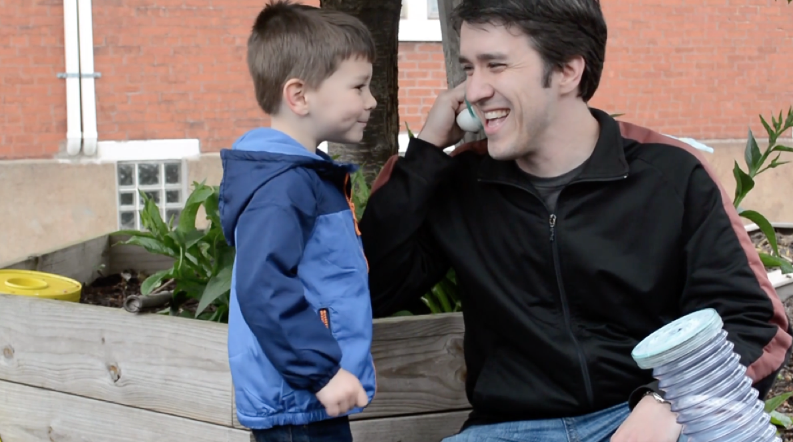

Spring 2016,
We proposed and rapid prototyped the idea of a community dialogue tool in a local garden in Pittsburgh
It's an ecosystem we designed to let community members freely express and share their thoughts both in the garden and remotely. Our goal was to raise community awareness and let community members interact with and share the space beyond the physical boundaries.
Prompt:
Bits and Atoms in the real world
In prototyping for interaction design class, we were tasked to design for a specific community space: Octopus Garden, located in a Pittsburgh neighborhood to improve the current way people interact with it. Octopus Garden is a little garden bought buy one of the local residents. It's named after the famous "Octavia" Octopus statue in the middle of the physical space.
Understanding the place:
Lack of communication in the community
Through visiting the Octavia , observing how people interact with it and chatting with local community members, we took some key notes:
1.Isolated Community due to gentrification
Very few people would actually come into the Octopus Garden even though a lot of them pass it everyday. Through chatting with the community garden owner and members, we learned that little communication happens between community members as a result of gentrification.
2.Sharing of space is limited by physical boundaries
Some community members have part of the garden for planting, yet the limitation of space makes it impossible for everyone to get engaged in this experience.
3.Existing behavior of expressing emotion
In the garden, we found tiny messages written on paper in the garden where community members share their thoughts and secrets.
Start the brainstorm:
Questions we had in mind
After obtaining an impression of Octopus garden and the community surround it, our team started tossing around ideas. While brainstorming, some of the questions we had include:
Q:"Should the installation be a completely novel experience or should it leverage how community already interacts with it?"
Q:"Should the installation only happen in the garden?"
Q:"How much effort are we asking from the community members?"
Q:"How advanced could the technology be to not be too much for our audience?"
Solution:
An organic system that blends seamlessly into space
We designed a system for the community that consists two parts. An on-site installation and a remote web platform. We decided to have no screens for on-site interaction because we didn't want technology to distract people from the purpose of enjoying the space.
In the Garden: Interactive communication installation
The device takes the form of a dialing telephone and is embedded on the top of Octopus’s testicle. Garden visitors can choose to record different types of messages, such as making wishes, telling secrets or listen to messages left by others.
At home:a web platform that completes an integrated experience.
A web-based online platform where messages could be reviewed and found, the platform also serve as an announcement board for community-based activities organized by community members based on community conversations.
The Built: Bring out the shapes
When designing the physical computing components, we wanted to demonstrate that we could create a working system using existing technology. With our physical prototype, we wanted to design it as a product that our computing components could be housed within. We set out for it to be weather-proof and have the affordances of a telephone. A rotary phone was disassembled in the hopes that it might be possible to use the casing of the phone as a ceramic or plaster mold.In the end, we decided to use InstaMorph to build the shape of the prototype.
The Built: Bring out the lights
We decided to install lights on Octavia’s leg to provide affordance for people interact with the physical design components. Our general idea was to have people see lights going in & out to indicate the exchange/transport of interaction. We considered many factors such as “will users get distracted by the lights when they speak?” and “Do people really want to see the light that represents their emotions while they talk?” However, we agreed on the fact that a light should be shooting into/out of the octavia as a feedback design. While we brought the light out to the garden to get people’s response. We tried different ways to the lights to light up. From user’s feedback, people actually enjoyed seeing the light twinkles as they talk because they feel like they are being listened.
The Built: Bring out the code
Given an engineering background, my main role in this project was to build the functional prototype. We didn’t have enough time to figure every function that we wanted to implement on this prototype, but we managed to build a basic working prototype that could record, dial and play. We recorded our own voices to act as input. Our code in Arduino was almost successful but it didn’t play the audio once but in loop. In the end, we decided to drop the processing idea and work with mp3 trigger and trigger mp3 audio files. mp3 trigger board’s RX pin is connected to the TX pin on Arduino for receiving and transmitting. We also built a working prototype of the web platform using framerJS. Play with the website prototype.
Test: Bring out the experience
We brought our prototypes to Octopus Garden and let the community members play with it. We received many positive feedbacks that such installation will definitely bring a lot more joy and interaction to the community and garden, yet also heard concerns that “how to deal with holistic comments” or “contents not suitable for children”. This prototype is nowhere near perfect, yet it served as a starting point to have a new idea out in short amount of time. If given more time, We would love to keep iterating on our prototype, dig deeper in UX, and actually bring it to the community.
